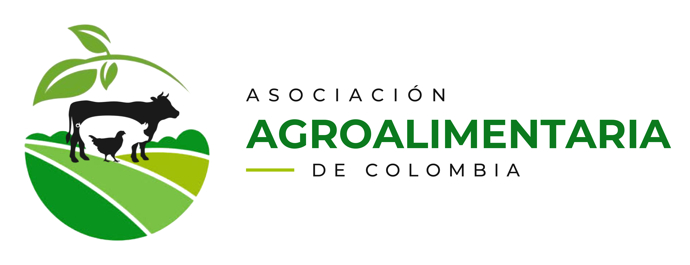

Producción agropecuaria
Promovemos procesos productivos que responden a las necesidades y oportunidades del campo colombiano.

Nuestra asociación
Somos una organización que integra productores, organizaciones e instituciones para impulsar el desarrollo agropecuario y agroalimentario de Colombia.
Nuestro objeto social promueve la producción, transformación y comercialización de productos del campo, el fortalecimiento de la economía campesina y la gestión de iniciativas que mejoren la calidad de vida de nuestros asociados y sus comunidades.
Lo que nos mueve
Promovemos oportunidades que reconocen y fortalecen el trabajo de las familias rurales.
Contribuimos al progreso integral y sostenible de los territorios.
Trabajamos por mejores condiciones de vida para nuestros asociados y sus comunidades.
Impulsamos prácticas responsables con los recursos naturales y el entorno.
Fomentamos la colaboración, la inclusión y la construcción colectiva.
Desarrollamos capacidades para una producción competitiva y con valor agregado.
Acción en el territorio
Promovemos procesos productivos que responden a las necesidades y oportunidades del campo colombiano.
Impulsamos la transformación de productos para generar valor agregado y ampliar sus oportunidades.
Conectamos la oferta de nuestros productores con mercados y canales de comercialización.
Fortalecemos conocimientos y capacidades técnicas, organizativas y empresariales.
Formulamos, ejecutamos y acompañamos proyectos de desarrollo agropecuario y agroalimentario.
Articulamos esfuerzos con entidades públicas, privadas y organizaciones de cooperación.
Experiencia que articula
Participamos en procesos contractuales orientados al desarrollo del sector.
Acompañamos la cadena comercial desde el productor hasta el mercado.
Convertimos necesidades y oportunidades en iniciativas viables y medibles.
Creamos vínculos estratégicos para ampliar el alcance de cada iniciativa.
Movilizamos recursos y capacidades para respaldar el desarrollo productivo.
Integramos actores y organizaciones alrededor de objetivos compartidos.
Construimos juntos
Articulamos productores, comunidades, empresas e instituciones para transformar oportunidades en resultados. Sumamos conocimiento del territorio, capacidad de gestión y vocación de servicio para construir alianzas que fortalezcan el campo colombiano.
HablemosConversemos
¿Quieres afiliarte, crear una alianza o conocer más sobre nuestro trabajo? Escríbenos.
+57 320-420-0954 asociacionagroalimentaria79@gmail.com www.asociacionagroalimentaria.comNIT 902120877